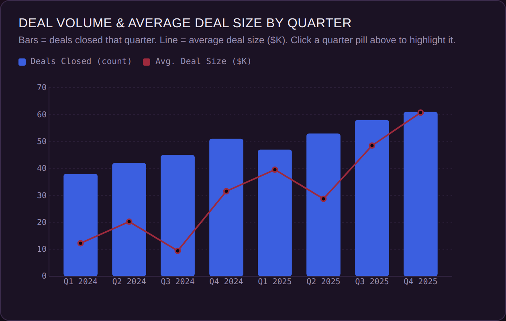
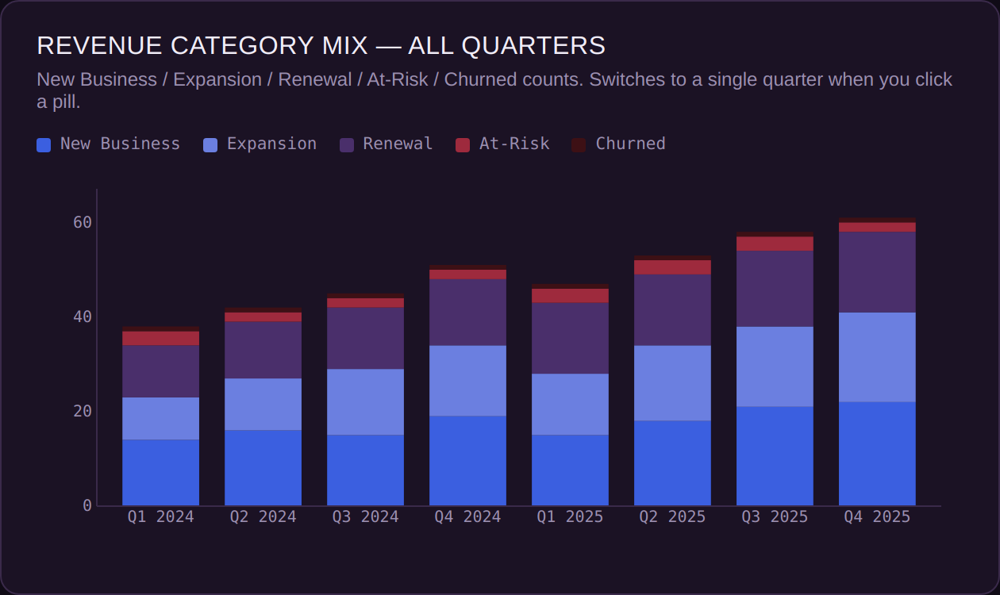
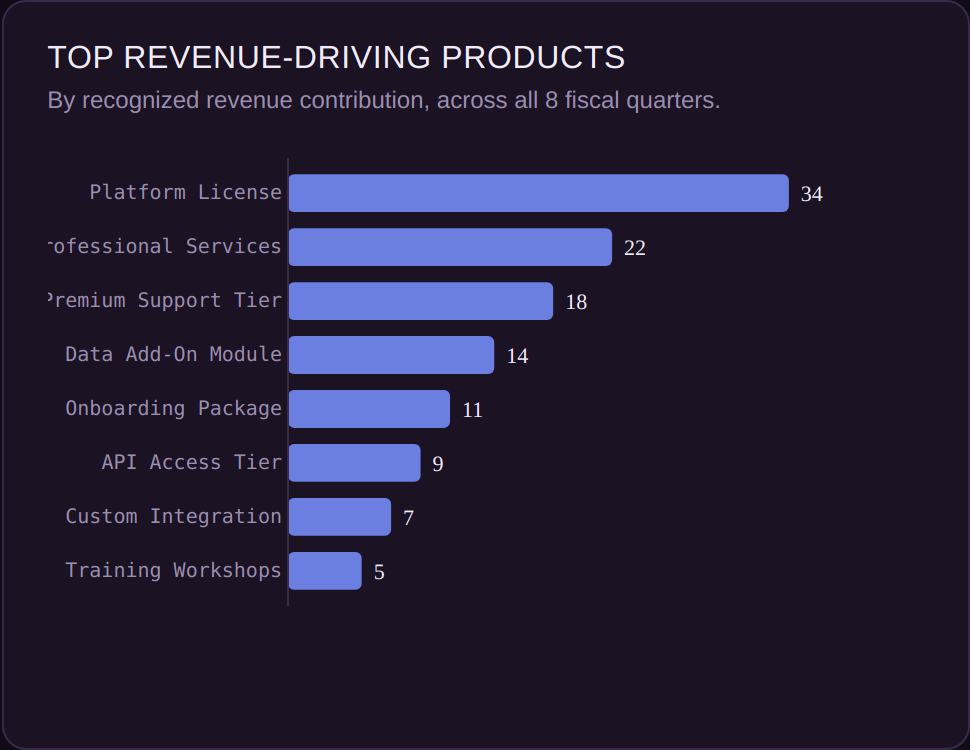

The exact same D3.js dashboard template as The Main Stage — same four chart types, same shared-filter interactivity, same code — with an entirely different dataset and a new color identity dropped in. Nothing about the chart-drawing logic changed; only the data object and the palette did.



Why This Exists
It's one thing to say a template is "reskinnable." This is the proof: same chart-drawing functions, same interactivity pattern (click a period, four views update together), same underlying data shape — just swap what the categories mean. The color system is new too: this variant, "Velvet Exchange," combines royal blue, periwinkle, deep purple, and crimson from the same reference palette the rest of this site draws from, arranged specifically for a financial reporting context rather than an entertainment one.
The Mapping
| Original (Drag Race) | This Demo (Finance) |
|---|---|
| Season (S01–S14) | Fiscal quarter (Q1 2024–Q4 2025) |
| Queens cast that season | Deals closed that quarter |
| Average contestant age | Average deal size ($K) |
| WIN / HIGH / SAFE / LOW / BTM | New Business / Expansion / Renewal / At-Risk / Churned |
| Season's winning queen | Top account by revenue |
| Most lip-synced artists | Top revenue-driving products |